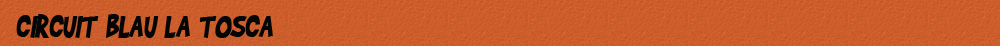

Els adults i els nens més alts de 1,30 m. Sempre començaran per aquest circuit d'iniciació tant d'alçada com de dificultat. Un cop equipats, els monitors us explicaran la normativa i el funcionament de les instal·lacions i sereu vosaltres mateixos qui, de forma autònoma, anireu progressant al llarg del recorregut. Sempre sota la supervisió d'algun dels monitors.
Els Jocs del Circuit
- Pont d'acordió
- Pont nepalès
- Pont de cordes
- Xarxa plana
- Gronxadors
- Liana
- Pont de mico
- Travessa infernal
- Pont tibetà
- Pont de plataformes
- Xarxa aranya
- Troncs rodants
- Tirolina final 1(baixa) o 2 (alta)

Característiques tècniques del circuit
- Numero de jocs: 13
- Alçada plataformes: entre 2 i 8 metres
- Longitud total circuit:
- A partir de: 1,30 m d'alçada
- Dificultat: mitjana/baixa
- Durada: 35 minuts